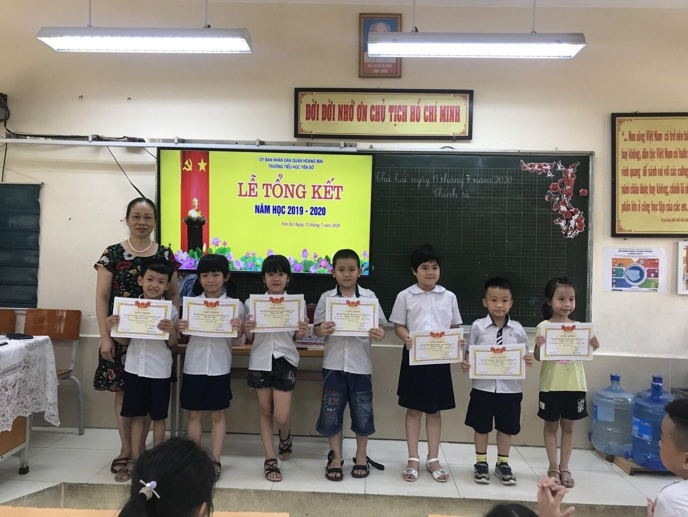

BÀI DỰ THI VIẾT VỀ TẤM GƯƠNG “DÂN VẬN KHÉO” GIAI ĐOẠN 2017 – 2020
Họ và tên: Lê Thị Thanh Hà
Giáo viên: Tổ trưởng tổ 5 - trường Tiểu học Yên Sở
CÔ GIÁO SẮP VỀ HƯU VẪN LÀM TỐT CÔNG TÁC
TUYÊN TRUYỀN PHỤ HUYNH TRONG DẠY HỌC TRỰC TUYẾN
Năm học 2019 – 2020, một năm học đặc biệt đã khép lại. Năm học này dài hơn cùng bao khó khăn thử thách với thầy và trò trường Tiểu học Yên Sở. Tuy nhiên những thành tích trong năm học đã động viên khích lệ thầy trò nhà trường, đem lại sự bất ngờ cho cha mẹ học sinh. Có được kết quả đó là nhờ sự nỗ lực phấn đấu trong dạy và học của giáo viên, học sinh đặc biệt trong thời gian nghỉ học để phòng dịch Covid - 19.
Thực hiện sự chỉ đạo của Bộ trưởng Bộ Giáo dục và Đào tạo “Tạm dừng đến trường nhưng không dừng học”, trường tôi đã chủ động, linh hoạt trong việc xây dựng kế hoạch thực hiện nội dung chương trình học kỳ 2 năm học 2019 - 2020 phù hợp với khung thời gian dạy học thực tế trong bối cảnh ảnh hưởng của dịch bệnh. Kế hoạch thực hiện đảm bảo tính khoa học, đúng và đủ theo chuẩn kiến thức kỹ năng của chương trình các lớp. Nhà trường tổ chức dạy học trực tuyến qua mạng để hỗ trợ học sinh học tập tại nhà. Trong các giờ dạy, Ban giám hiệu nhà trường chỉ đạo giáo viên tổ chức các hoạt động đổi mới phương pháp và hình thức tổ chức dạy học, thường xuyên dự giờ để tư vấn cho giáo viên nâng cao chất lượng, hiệu quả giờ học. Nhiều giờ dạy, giáo viên đã tổ chức tốt các hoạt động, phát huy tinh thần học tập tích cực của học sinh, thu hút 100% học sinh tham gia như giờ dạy của đồng chí Vũ Thị Thúy – giáo viên lớp 1A5. Chia sẻ về những thành công trong dạy học trực tuyến, đồng chí Thúy cho biết: “Để có được 100% học sinh trong lớp tham gia tích cực các giờ học trực tuyến, đồng chí đã vận dụng nhiều biện pháp để tuyên truyền tới cha mẹ học sinh”.
Theo chia sẻ của đồng chí Thúy, trong buổi đầu trao đổi với phụ huynh về việc triển khai học trực tuyến qua zoom, nhiều phụ huynh không ủng hộ và còn nêu rất nhiều khó khăn. Họ cho rằng học sinh lớp 1 còn quá nhỏ làm sao có thể học tập qua các phương tiện như máy tính, điện thoại, ipad,… Trước thực tế như vậy, đồng chí đã động viên, giải thích và thuyết phục phụ huynh để phụ huynh hiểu rằng trong thời gian nghỉ dịch dài như vậy mà các con dừng học sẽ làm gián đoạn việc học, ảnh hưởng tới việc tiếp thu kiến thức của các con khi đi học trở lại. Việc học trực tuyến qua zoom là hình thức phù hợp nhất với các con hiện nay. Để thực hiện được
việc học trực tuyến, không phải chỉ học sinh gặp khó khăn mà giáo viên cũng rất vất vả. Sau khi nghe giáo viên giải thích, phụ huynh đã rất ủng hộ và hứa sẽ cùng hợp tác với cô, tạo mọi điều kiện để cho các con được tham gia học. Chính vì thế, ngay từ những buổi đầu dạy zoom, lớp đồng chí đã có hơn 80% học sinh tham gia. Tuy nhiên, sau buổi học đầu tiên, nhiều phụ huynh tiếp tục phản hồi những khó khăn khi các con tham gia học. Có những phụ huynh còn thôi không cho con học trực tuyến nữa. Đồng chí lại kiên trì trao đổi với phụ huynh qua điện thoại, qua zalo,.. về cách sử dụng các phương tiện, cách truy cập phần mềm, cách hướng dẫn con học,… Đồng chí yêu cầu, khi học các con cần ghi rõ tên, bật camera nếu có, tắt micro để tránh tiếng ồn bên ngoài làm ảnh hưởng đến lớp học và chỉ bật micro khi có ý kiến, tương tác với cô và các bạn trong lớp học. Với cách làm như vậy, phụ huynh và học sinh dần dần quen và thấy được việc học trực tuyến không phải là khó mà lại mang lại hiệu quả. Có những phụ huynh chưa cho con tham gia, đồng chí lại kiên trì thuyết phục. Cuối cùng, lớp đồng chí đã có 100% học sinh tham gia. Trong buổi dự giờ lớp đồng chí, tôi thật bất ngờ khi thấy nề nếp học tập của các bạn lớp 1 còn tốt hơn cả nề nếp học tập của anh chị lớp trên. Các em sử dụng các chức năng của phương tiện như: bật mic, tắt mic, giơ tay, bày tỏ ý kiến,… rất thành thạo. Không những vậy, các em còn tham gia nhiệt tình vào các hoạt động giáo viên tổ chức như: phát biểu ý kiến, nhận xét góp ý cho bạn, nêu ý kiến thắc mắc,… Sau giờ dự, tôi có hỏi đồng chí: “Bí quyết nào mà lớp chị thu hút được 100% học sinh tham gia học trực tuyến như vậy?”. Chị tươi cười nói: “Nhờ phụ huynh ủng hộ đấy em ạ!”. Câu trả lời rất thật nhưng tôi biết, để có được kết quả như vậy, chị đã làm tốt công tác tuyên truyền, tạo dựng được niềm tin với cha mẹ học sinh. Mặc dù đã lớn tuổi nhưng chị vẫn hăng say học hỏi về công nghệ thông tin, về dạy học trực tuyến cho học sinh. Đồng chí là người tiên phong trong việc xây dựng các bài học trực tuyến trên phần mềm zoom. Sau tiết dạy đầu tiên, giáo viên, học sinh và phụ huynh trong lớp gần như đồng loạt thả tim cổ vũ. Điều đó đã giúp đồng chí có thêm tự tin và động lực tiếp tục làm tốt công việc của mình.
Với những cố gắng của đồng chí, cuối năm học, chất lượng lớp đồng chí dẫn đầu trong khối 1. Tỉ lệ các bài kiểm tra đạt điểm giỏi rất cao. Và đặc biệt, trong buổi họp phụ huynh cuối năm, nhiều phụ huynh đã bày tỏ sự biết ơn, tâm tư, tình cảm của mình với cô giáo. Có phụ huynh còn nói: “Em thật biết ơn cô. Một cô giáo đã lớn tuổi, chỉ còn vài tháng nữa cô đã về hưu nhưng rất nhiệt tình, tâm huyết trong việc dạy các con. Em rất ấn tượng với các bài giảng của cô trên trực tuyến. Em thấy các con học qua zoom mà không khác gì được học trực tiếp trên lớp. Qua đây, phụ huynh chúng em cũng biết được thêm cách dạy để cùng với cô giáo và nhà trường dạy bảo các con được tốt hơn.”
Đồng chí Vũ Thị Thúy là một tấm gương tuyệt vời đáng để chúng tôi học tập. Đúng là “Gừng càng già càng cay” như ông cha ta đã đúc kết.
Cô giáo Vũ Thị Thúy trao thưởng cho học sinh lớp 1A5 trong buổi tổng kết cuối năm.